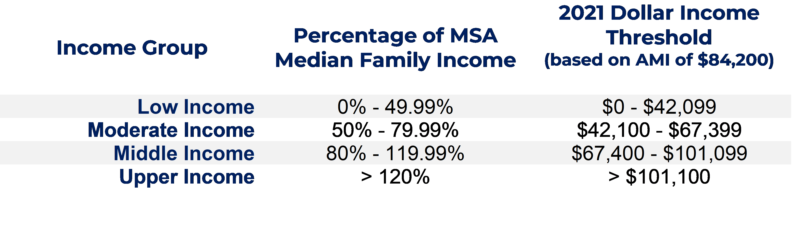
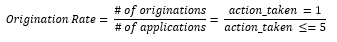
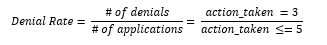
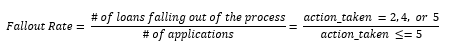

This report highlights home mortgage lending data for Allegheny County from 2012 to 2021, with a specific focus on the most recent HMDA data from 2018 to 2021. In total, this encompasses over 597,000 loan applications from 1554 unique financial institutions over the decade. While the bulk of analysis focuses on 2018 to 2021, futher loan records at the neighborhood and individual financial institution level also includes HMDA data from 2012 to 2017. Because of changes to HMDA reporting during the 10 year reporting period from 2012 to 2021, PCRG has worked to preserve all lending records at the most disaggregated level to provide a basis for analysis among the data from 2012-2017 and 2018-2021. Included below is the data dictionary, which covers the relevant steps taken to analyze this data, as well as information covering the source material for American Community Survey (ACS) data used in creating our neighborhood profiles.
Jump to Section
PCRG's annual mortgage lending study is derived from HMDA data, including the previous decade of lending from 2012 to 2021. This data is made available annually by the Consumer Financial Protection Bureau (CFPB) and is aided in collection by the Federal Financial Institutions Examination Council (FFIEC). The following analysis will mostly focus on the most recent year and provide general trends for neighborhoods and banks over the last decade. Census tract information is reflective of American Community Survey (ACS) five-year estimate data over two periods. HMDA data from 2017 to 2021 reflects 2010 census tract boundaries, 2015 ACS estimates for tract demographics, and 2015 ACS estimates for median family income adjusted annually for inflation by the FFIEC. HMDA data from 2012-2016 also uses 2010 census tract boundaries but uses 2010 ACS estimates for demographic and income information. Beginning next year HMDA data will use the 2020 census boundaries and ACS five-year estimates.
The companion website includes ACS five-year estimates from 2019 (data collected from 2015-2019) to provide additional information regarding tract level characteristics. This includes the following data or subject tables from data.census.gov:
Race and Ethnicity
PCRG included both race and ethnicity into a single demographic characteristic, using the following criteria:
The logic applied to non-Hispanic Black applicants also applies to other minority races collected in HMDA applications, such as American Indian or Alaska Native applicants, Asian applicants, and Native Hawaiian or Other Pacific Islander Applicants.
Income Status
PCRG calculated the applicant's income group using the income thresholds for area median income. This process uses the applicant's reported income relative to the FFIEC provided Pittsburgh Metro Area median family income. In 2021, the income levels of applicants are as follows:

Loan Purpose
The HMDA dataset includes three major categories of loan purposes: home purchase loans, home improvement loans, and refinancing loans. After 2018, HMDA further distinguished refinancing loans by dividing standard refinancing and cash out refinancing into separate categories. Additional loan purposes include other, nonstandard loans and a rarely used non-applicable category.
PCRG has aggregated refinanced loans back into a single category. The focus of this report concerns home purchase, home improvement, and refinancing loans - but we did not exclude other and non-applicable loans from aggregate totals.
Application Disposition Status
Originations
The origination rate for any given group is equal to the number of loans originated divided by total applications.

Denials
The denial rate for any given group is equal to the number of loans denied divided by total applications.

Fallout
The fallout rate for any given group is equal to the number of loans that a given lender approves but is not accepted by the applicant, applications that were withdrawn by the applicant, or applications closed by the bank for incompleteness, divided by total applications.

Purchased Loans
A bank may purchase from another primary mortgage originator, such as another bank, government-sponsored enterprises (such as Fannie Mae, Freddie Mac, etc.), credit unions, mortgage firms, and more. PCRG has included some analysis on purchased loans, though the bulk of our analysis focuses on primary originations within the Pittsburgh market.
Tract Income Status
The Federal Financial Institution Examination Council (FFIEC) reports the tract level median family income as a percentage of the metropolitan statistical area median income (annually adjusted by the FFIEC). For HMDA data from 2017 to 2021, this is based off the ACS five-year estimate for family income at the tract level compared to the median family income at the Pittsburgh MSA level - similar to the manner used to calcaulate applicant income status. FFIEC area median incomes are like HUD area median incomes and assume an average family size of four. Using the calculations discussed previously, PCRG was able to determine each census tracts' income level as either low-, moderate-, middle-, or upper-income. Additionally, some tracts are given a designation by the FFIEC as "unknown income." This is generally reserved for areas that do not have significant households, families, or traditional housing units - such as the tracts that represents city parks, cemeteries and graveyards, and fully commercial areas. This also includes areas like parts of the Oakland neighborhood in Pittsburgh that is predominately student housing and other university space, as well as parts of Marshall-Shadeland which housed State Correctional Institution - Pittsburgh until it's closure in 2017.
Neighborhood/Municipality Aggregation
In the neighborhood profiles tab of this website, ACS data is provided at the tract level across 11 different subject tables. When selecting a municipality, neighborhood, or other locality, the dashboard site will automatically calculate an average for the relevant ACS topics. This is not a weighted average based on the populations of the tracts that make up a given locality, and therefore should be used with caution. While not perfect, PCRG strongly believes that providing this information still provides a stronger contextual basis for understanding CRA targetted areas within Allegheny County.
Maps created for analysis on this site are zoom enabled using the mouse scroll wheel. To select multiple census tracts at once on maps, hold the "control" button while selecting with the left mouse button.
Census tracts 42000000001 and 42000000002 are dummy variables created as a workaround to label maps titles for Allegheny County (excluding the City of Pittsburgh) and the City of Pittsburgh specifically. These do not accurately reflect ACS statistics for the two areas, but instead a simple average for all tracts identified as Pittsburgh versus the remainder of the county.
This site remains a work in progress, created using Microsoft's PowerBI software. If you have any difficulty navigating the website or provided analysis, please reach out to John Boyle at PCRG or visit our Contact Page linked here.